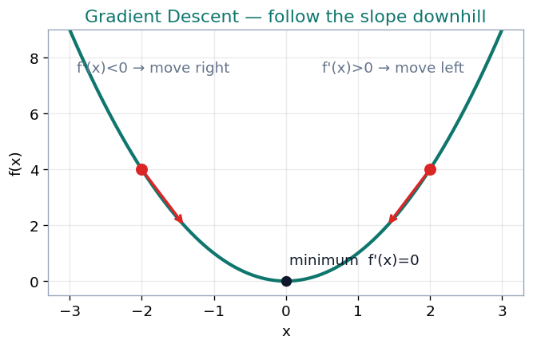
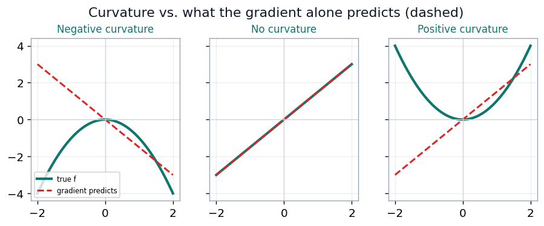
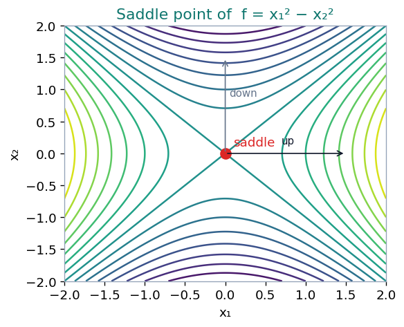
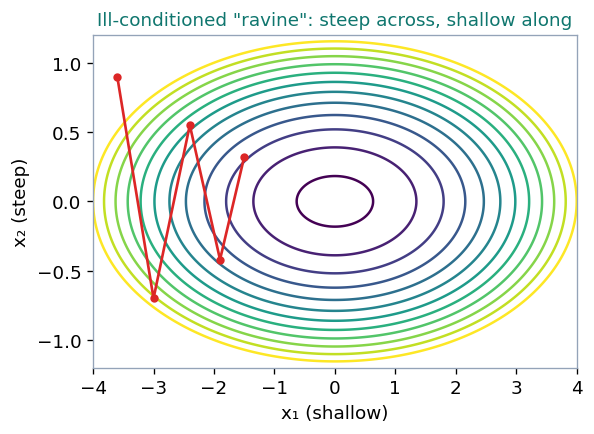

Gradient descent, curvature, conditioning, and the floating-point traps that break training.
Module 2 · Lecture notes by Dr. Abdulkarim Albanna
Foundations Optimization ~55 minPrerequisites: Module 1 (Linear Algebra). You should be comfortable with vectors, matrices, eigenvalues and quadratic forms before starting.
Algorithms are specified in terms of real numbers, but real numbers cannot be represented in a finite computer. This raises questions that pure mathematics never asks: whether an algorithm still works when implemented with a finite number of bits, whether small changes in the input produce large changes in the output, and whether rounding errors, noise, or measurement errors can accumulate into a wrong answer. Alongside these sits a difficulty that is not about bits at all — iteratively searching for the best input is genuinely hard even in exact arithmetic.
The second framing is the practical one, for two reasons. A local minimum that performs nearly as well as the global one is an acceptable stopping point. And in practice we usually do not reach a critical point of any kind: in a typical convolutional network the gradient norm increases throughout training while the classification error falls steadily.
Picture the loss curve \(f(x)\) with several dips: a shallow global minimum, a nearby acceptable local minimum of almost the same depth, and a poor minimum to avoid. Optimization may fail to find the global minimum when multiple local minima or plateaus are present. In deep learning we generally accept such solutions, provided they correspond to a sufficiently low value of the loss.
The material divides into two parts: iterative optimization (Sections 1–6) and rounding error, underflow, and overflow (Sections 7–13).
Given a differentiable \(f\), a starting point \(x^{(0)}\) and a learning rate \(\eta > 0\), the gradient descent iteration is
\[ x^{(k+1)} = x^{(k)} - \eta \, \nabla f\!\left(x^{(k)}\right). \]
The gradient points in the direction of steepest increase, so moving against it decreases \(f\). The scalar \(\eta\) is also called the step size; some texts write it as \(\epsilon\), and most libraries call it lr.

Take \(f(x) = \tfrac{1}{2}x^2\), so \(f'(x) = x\) and the update collapses to a single multiplication:
\[ x \leftarrow x - \eta x = (1-\eta)\,x. \]
Starting from \(x_0 = 1\), four values of \(\eta\) give four qualitatively different behaviours:
| \(\eta = 0.1\) | \(\eta = 1.0\) | \(\eta = 1.5\) | \(\eta = 2.5\) | |
|---|---|---|---|---|
| \(x_0\) | 1 | 1 | 1 | 1 |
| \(x_1\) | 0.9 | 0 | −0.5 | −1.5 |
| \(x_2\) | 0.81 | 0 | 0.25 | 2.25 |
| \(x_3\) | 0.729 | 0 | −0.125 | −3.375 |
| \(x_4\) | 0.6561 | 0 | 0.0625 | 5.0625 |
| behaviour | slow, monotone | one step | oscillating | diverges |
The iteration diverges when \(|1-\eta| > 1\), that is when \(\eta > 2\). At \(\eta = 2\) exactly, the factor is \(-1\) and the iterates alternate \(1, -1, 1, -1\) forever — neither converging nor diverging.
For a quadratic with Hessian \(H\), gradient descent converges only when
\[ \eta < \frac{2}{\lambda_{\max}}, \]
where \(\lambda_{\max}\) is the largest eigenvalue of \(H\). In the example above \(f''(x) = 1\), so \(\lambda_{\max} = 1\) and the boundary is \(\eta = 2\).
The single largest curvature in a network — one eigenvalue out of millions — sets the legal learning rate for every parameter. A loss that becomes NaN in the first few iterations is usually a violation of this inequality.
A point where the gradient vanishes, \(\nabla f = 0\). In one dimension a critical point is a local minimum, a local maximum, or a saddle point (an inflection with zero slope); the second derivative distinguishes them:
\[ f''(x) > 0 \rightarrow \text{minimum}, \qquad f''(x) < 0 \rightarrow \text{maximum}, \qquad f''(x) = 0 \rightarrow \text{inconclusive}. \]
Picture three one-dimensional curves with a flat spot: a minimum (a valley that curves upward), a maximum (a peak that curves downward), and a saddle / inflection (flat, then continuing in the same direction). A critical point is any point with zero slope; it can be a local minimum, a local maximum, or a saddle point.
The first derivative locates where the surface is flat. The second derivative determines what shape that flat place has.
For \(f(x_1, \ldots, x_n)\), the Hessian is the \(n \times n\) matrix of all second-order partial derivatives:
\[ H_f = \begin{bmatrix} \dfrac{\partial^2 f}{\partial x_1^2} & \dfrac{\partial^2 f}{\partial x_1 \partial x_2} & \cdots & \dfrac{\partial^2 f}{\partial x_1 \partial x_n} \\[6pt] \dfrac{\partial^2 f}{\partial x_2 \partial x_1} & \dfrac{\partial^2 f}{\partial x_2^2} & \cdots & \dfrac{\partial^2 f}{\partial x_2 \partial x_n} \\[6pt] \vdots & \vdots & \ddots & \vdots \\[4pt] \dfrac{\partial^2 f}{\partial x_n \partial x_1} & \dfrac{\partial^2 f}{\partial x_n \partial x_2} & \cdots & \dfrac{\partial^2 f}{\partial x_n^2} \end{bmatrix} \]
Because mixed partials commute for continuous second derivatives, \(H\) is symmetric. It is a different matrix at every point of the domain, so it must be evaluated at the point of interest. Since \(H\) is symmetric, the spectral theorem applies: its eigenvalues are real and its eigenvectors orthogonal.
At a critical point, the signs of the eigenvalues of \(H\) classify the point:
A critical point in \(n\) dimensions is a minimum only if all \(n\) eigenvalues are positive. For a network with a million parameters this is vanishingly unlikely, so almost every critical point encountered in a deep network is a saddle point. The obstacle to training is not being trapped in a bad local minimum, but crawling across the plateaus that surround saddles.
For \(z = f(x,y)\) with \(H = \begin{bmatrix} f_{xx} & f_{xy} \\ f_{yx} & f_{yy} \end{bmatrix}\), the leading principal minors are
\[ |H_1| = f_{xx}, \qquad |H_2| = f_{xx}f_{yy} - f_{xy}f_{yx}. \]
| Condition | Conclusion |
|---|---|
| \(|H_2| > 0\) and \(f_{xx} > 0\) | local minimum |
| \(|H_2| > 0\) and \(f_{xx} < 0\) | local maximum |
| \(|H_2| < 0\) | saddle point |
| \(|H_2| = 0\) | test fails |
The rule reads in two stages. First, \(|H_2|\) decides whether the point is a saddle: a negative determinant settles the matter and the sign of \(f_{xx}\) is irrelevant. Only when \(|H_2| > 0\) does \(f_{xx}\) choose between minimum and maximum. The reason is the connection to eigenvalues:
\[ |H_2| = \det H = \lambda_1 \lambda_2, \qquad f_{xx} + f_{yy} = \operatorname{tr} H = \lambda_1 + \lambda_2. \]
A negative determinant means the eigenvalues have opposite signs — the surface curves up along one eigenvector and down along the other, which is exactly a saddle. A determinant of zero means some eigenvalue is zero: a direction with no curvature, about which the second-order approximation carries no information.
\[ Z = 3X^2 - XY + 2Y^2 - 4X - 7Y + 12 \]
\[ f_X = 6X - Y - 4, \qquad f_Y = -X + 4Y - 7 \]
Setting both to zero: from the first, \(Y = 6X - 4\). Substituting into the second,
\[ -X + 24X - 16 - 7 = 0 \;\Longrightarrow\; 23X = 23 \;\Longrightarrow\; X = 1, \; Y = 2. \]
The second partials are constants, \(f_{XX} = 6\), \(f_{YY} = 4\), \(f_{XY} = f_{YX} = -1\):
\[ H = \begin{bmatrix} 6 & -1 \\ -1 & 4 \end{bmatrix}, \qquad |H_2| = (6)(4) - (-1)(-1) = 23 > 0, \qquad f_{XX} = 6 > 0. \]
So \((1, 2)\) is a local minimum, with \(Z(1,2) = 3\).
Note that \((-1)(-1) = +1\) is subtracted. For a symmetric Hessian the product \(f_{xy}f_{yx}\) is always non-negative, so off-diagonal terms always reduce the determinant — they always push a critical point toward being a saddle. The eigenvalues confirm the result: \(\lambda^2 - 10\lambda + 23 = 0\) gives \(\lambda = 5 \pm \sqrt{2} \approx 6.41\) and \(3.59\), both positive. Their product is \(23 = |H_2|\) and their sum is \(10 = 6 + 4\).
\[ Z = -X^2 - 2Y^2 + 5X + 4Y \]
The variables separate:
\[ Z_X = -2X + 5 = 0 \Rightarrow X = 2.5, \qquad Z_Y = -4Y + 4 = 0 \Rightarrow Y = 1. \]
\[ H = \begin{bmatrix} -2 & 0 \\ 0 & -4 \end{bmatrix}, \qquad |H_2| = 8 > 0, \qquad Z_{XX} = -2 < 0. \]
So \((2.5, 1)\) is a local maximum, with \(Z = 8.25\). The determinant is positive at a maximum because \(|H_2|\) is the product of the two curvatures, and two negatives multiply to a positive. A positive determinant means the curvatures agree in sign, not that they are positive.
\[ f(x, y) = x^3 + y^3 - 3xy \]
\[ f_x = 3x^2 - 3y = 0 \Rightarrow y = x^2, \qquad f_y = 3y^2 - 3x = 0 \Rightarrow x = y^2. \]
Substituting one into the other, \(x = x^4\), so \(x(x^3 - 1) = 0\) and \(x = 0\) or \(x = 1\). The critical points are \((0, 0)\) and \((1, 1)\).
The critical points are the intersections of the two parabolas \(y = x^2\) and \(x = y^2\): they cross at the origin \((0,0)\), which turns out to be a saddle, and at \((1,1)\), which is a local minimum.
Here the second partials are not constants:
\[ f_{xx} = 6x, \quad f_{yy} = 6y, \quad f_{xy} = -3 \;\Longrightarrow\; H(x,y) = \begin{bmatrix} 6x & -3 \\ -3 & 6y \end{bmatrix}. \]
At \((0,0)\):
\[ H = \begin{bmatrix} 0 & -3 \\ -3 & 0 \end{bmatrix}, \qquad |H_2| = 0 - 9 = -9 < 0 \;\Rightarrow\; \text{saddle point.} \]
Its eigenvalues are \(+3\) and \(-3\).
At \((1,1)\):
\[ H = \begin{bmatrix} 6 & -3 \\ -3 & 6 \end{bmatrix}, \qquad |H_2| = 36 - 9 = 27 > 0 \text{ and } f_{xx} = 6 > 0 \;\Rightarrow\; \text{local minimum,} \]
\(f = -1\). Its eigenvalues are \(3\) and \(9\). The same algebraic expression for \(H\) gives opposite conclusions at the two points, which is why the Hessian must be re-evaluated at each critical point.
\[ f(x, y, z) = x^3 + y^3 + z^3 - 9xy - 9xz + 27x \]
\[ f_x = 3x^2 - 9y - 9z + 27, \qquad f_y = 3y^2 - 9x, \qquad f_z = 3z^2 - 9x. \]
Dividing each by 3: \(\;x^2 - 3y - 3z + 9 = 0,\; y^2 = 3x,\; z^2 = 3x.\) The last two give \(y^2 = z^2\); taking \(y = z\) and \(x = y^2/3\),
\[ \frac{y^4}{9} - 6y + 9 = 0 \;\Longrightarrow\; y^4 + 81 = 54y \;\Longrightarrow\; y = 3 \]
(since \(81 + 81 = 162 = 54 \cdot 3\)). So \(x = 3\), \(z = 3\), and the critical point is \((3, 3, 3)\).
\[ H = \begin{bmatrix} 18 & -9 & -9 \\ -9 & 18 & 0 \\ -9 & 0 & 18 \end{bmatrix} \]
\[ |H_1| = 18 > 0, \qquad |H_2| = 324 - 81 = 243 > 0, \]
\[ |H_3| = 18(324) + 9(-162) - 9(162) = 5832 - 1458 - 1458 = 2916 > 0. \]
All three leading principal minors are positive, so \(H\) is positive definite and \((3,3,3)\) is a local minimum, with \(f(3,3,3) = 0\).
Let \(|H_1|, |H_2|, \ldots, |H_n|\) be the leading principal minors.
If \(|H_2| = 0\) the test gives no answer, and this is genuine ignorance rather than a technicality. Compare
\[ f(x, y) = x^4 + y^4 \qquad \text{and} \qquad g(x, y) = x^4 - y^4 \]
at the origin. Both have zero gradient and zero Hessian there, so \(|H_2| = 0\) for both. But \(f\) has a genuine minimum — every nearby value is positive — while \(g\) has a saddle, positive along the \(x\)-axis and negative along the \(y\)-axis. Identical Hessians, opposite answers: the behaviour is governed by fourth-order terms that second derivatives cannot see.
The second derivative determines the curvature of a function — the extent to which the function deviates from the straight line predicted by the gradient alone.

With strong positive curvature, a step taken on the promise of the gradient can overshoot the minimum and land higher than where it started.
Because \(H\) is symmetric it decomposes as
\[ H = Q \Lambda Q^\top, \qquad Q = [\, v_1, v_2, \ldots, v_n \,] \]
with orthonormal eigenvectors \(v_i\) in the columns of \(Q\) and eigenvalues \(\lambda_i\) on the diagonal of \(\Lambda\).
A unit circle of vectors is multiplied by \(H\); each eigenvector keeps its direction and is scaled by its eigenvalue (\(v^{(1)} \to \lambda_1 v^{(1)}\), \(v^{(2)} \to \lambda_2 v^{(2)}\)), so the circle becomes an ellipse with axes along the eigenvectors.
The curvature of \(f\) in a unit direction \(d\) is
\[ d^\top H d = \sum_i \lambda_i \cos^2 \angle(v_i, d), \]
a weighted average of the eigenvalues, weighted by how much of \(d\) points along each eigenvector. The weights are non-negative and sum to 1, so the directional curvature always lies between \(\lambda_{\min}\) and \(\lambda_{\max}\).
Let \(H = \operatorname{diag}(1, 3)\) and \(d = \tfrac{1}{\sqrt{2}}(1, 1)\). The direction makes equal angles with both eigenvectors, so \(\cos^2\) is \(\tfrac{1}{2}\) for each:
\[ d^\top H d = \tfrac{1}{2}(1) + \tfrac{1}{2}(3) = 2, \]
which lies between \(\lambda_{\min} = 1\) and \(\lambda_{\max} = 3\), as it must.

Expanding \(f\) about the current point \(x^{(0)}\) and substituting the step \(x = x^{(0)} - \eta g\) gives
\[ f\!\left(x^{(0)} - \eta g\right) \approx \underbrace{f\!\left(x^{(0)}\right)}_{\text{original value}} - \underbrace{\eta\, g^\top g}_{\text{expected improvement from the slope}} + \underbrace{\tfrac{1}{2}\eta^2 g^\top H g}_{\text{correction for the curvature}} \]
where \(g\) is the gradient and \(H\) the Hessian at \(x^{(0)}\). When the last term is too large, the gradient descent step moves uphill.
Big gradients speed you up; big eigenvalues slow you down if you align with their eigenvectors.
Differentiating the approximation with respect to \(\eta\) and setting the result to zero gives
\[ -g^\top g + \eta\, g^\top H g = 0 \;\Longrightarrow\; \eta^\ast = \frac{g^\top g}{g^\top H g}. \]
This holds when \(g^\top H g > 0\). When \(g^\top H g\) is zero or negative the approximation predicts that increasing \(\eta\) forever will keep decreasing \(f\); since the Taylor series is unlikely to remain accurate for large \(\eta\), one resorts to a heuristic choice in that case.
If \(g\) aligns with the eigenvector of \(H\) corresponding to \(\lambda\), then \(g^\top H g = \lambda\, g^\top g\) and \(\eta^\ast = 1/\lambda\); for the largest eigenvalue this is \(1/\lambda_{\max}\). The eigenvalues of the Hessian thus determine the scale of the learning rate.
Take
\[ f(x_1, x_2) = \tfrac{1}{2}x_1^2 + \tfrac{3}{2}x_2^2, \qquad \nabla f = (x_1,\, 3x_2), \qquad H = \operatorname{diag}(1, 3), \]
at the point \(x^{(0)} = \left(1, \tfrac{1}{3}\right)\), chosen so that \(g = (1, 1)\).
\[ g^\top g = 2, \qquad g^\top H g = 1 + 3 = 4, \qquad \eta^\ast = \frac{2}{4} = \frac{1}{2}. \]
Since \(f\) is exactly quadratic, the Taylor approximation is exact and the prediction must match the true value:
\[ f\!\left(x^{(0)}\right) = \tfrac{1}{2} + \tfrac{1}{6} = \tfrac{2}{3}, \qquad x^{(1)} = \left(1, \tfrac{1}{3}\right) - \tfrac{1}{2}(1, 1) = \left(\tfrac{1}{2}, -\tfrac{1}{6}\right), \]
\[ f\!\left(x^{(1)}\right) = \tfrac{1}{8} + \tfrac{1}{24} = \tfrac{1}{6}, \qquad \text{predicted: } \tfrac{2}{3} - \tfrac{1}{2}(2) + \tfrac{1}{2}\left(\tfrac{1}{4}\right)(4) = \tfrac{1}{6}. \;\checkmark \]
Sweeping \(\eta\), with \(f(\eta) = \tfrac{2}{3} - 2\eta + 2\eta^2\):
| \(\eta\) | value of \(f\) | comment |
|---|---|---|
| \(1/3 = 1/\lambda_{\max}\) | \(2/9 \approx 0.222\) | conservative |
| \(1/2 = \eta^\ast\) | \(1/6 \approx 0.167\) | best possible single step |
| \(2/3\) | \(2/9 \approx 0.222\) | past optimal, still improving |
| \(1\) | \(2/3 \approx 0.667\) | zero net progress |
| \(1.2\) | \(1.147\) | worse than the start: the step went uphill |
The predicted loss is itself a parabola in \(\eta\), minimized at \(\eta^\ast = \tfrac{1}{2}\). Zero net progress occurs at exactly \(2\eta^\ast\) (back to the starting value), and beyond that the step increases the loss — the same factor of two that appears in the stability condition \(\eta < 2/\lambda_{\max}\).
Since \(g^\top H g / g^\top g = 4/2 = 2\) is the directional curvature along \(g\), the result can be stated in one line:
\[ \eta^\ast = \frac{1}{\text{curvature along the direction of travel}}. \]
For a matrix \(A \in \mathbb{R}^{n \times n}\) with eigenvalues \(\lambda_i\),
\[ \kappa = \max_{i,j} \left| \frac{\lambda_i}{\lambda_j} \right|, \]
the ratio of the magnitudes of the largest and smallest eigenvalue. When this number is large, matrix inversion is particularly sensitive to error in the input. It is an intrinsic property of the matrix itself, not a result of rounding during inversion: poorly conditioned matrices amplify pre-existing errors even when multiplied by the true inverse.
When the condition number of the Hessian is large, some directions have large eigenvalues and some have small ones. The large ones force the learning rate to stay small, so we lose the ability to move quickly along the small-eigenvalue directions.

\[ f(x_1, x_2) = \tfrac{1}{2}x_1^2 + 10x_2^2, \qquad H = \operatorname{diag}(1, 20), \qquad \kappa = 20. \]
At the point \(x^{(0)} = (10, 1)\) the gradient is \(g = (10, 20)\). We are 10 units from the minimum in \(x_1\) and only 1 unit away in \(x_2\), yet the gradient pulls twice as strongly toward \(x_2\) — the direction already almost finished. The gradient points along steepest descent, not toward the minimum. Each axis updates independently as \(x_i \leftarrow (1 - \eta\lambda_i)\,x_i\):
| \(\eta\) | factor on \(x_1\) (\(\lambda = 1\)) | factor on \(x_2\) (\(\lambda = 20\)) | outcome |
|---|---|---|---|
| 0.2 | 0.8 | −3.0 | \(x_2\) explodes |
| 0.1 | 0.9 | −1.0 | \(x_2\) bounces forever |
| 0.0952 | 0.905 | −0.905 | best possible |
| 0.01 | 0.99 | 0.8 | stable, but \(x_1\) crawls |
The optimal rate balances the two ends of the spectrum:
\[ \eta_{\text{opt}} = \frac{2}{\lambda_{\min} + \lambda_{\max}} = \frac{2}{21} \approx 0.0952, \qquad \text{both factors} = \frac{\kappa - 1}{\kappa + 1} = \frac{19}{21} \approx 0.905. \]
Reducing the error by a factor of ten requires \(\log(0.1)/\log(0.905) \approx 23\) iterations; with \(\kappa = 1\) it would take one. Batch and layer normalization, adaptive optimizers such as Adam, and careful initialization all reduce \(\kappa\).
\[ \Delta x = -H^{-1} g \]
Newton's method rescales each eigendirection by \(1/\lambda_i\), making the effective condition number 1 and solving a quadratic in a single step.
On the ravine above, at \((10, 1)\) with \(g = (10, 20)\) and \(H = \operatorname{diag}(1, 20)\):
\[ -H^{-1}g = -\left(\frac{10}{1},\, \frac{20}{20}\right) = -(10, 1) \;\Longrightarrow\; \text{lands exactly on the origin.} \]
Now take the saddle \(f = x_1^2 - x_2^2\), with \(H = \operatorname{diag}(2, -2)\), at the point \((0.1, 0.1)\) where \(g = (0.2, -0.2)\):
\[ \textbf{Newton: } -H^{-1}g = -\left(\frac{0.2}{2},\, \frac{-0.2}{-2}\right) = -(0.1, 0.1) \;\Longrightarrow\; \text{moves to } (0, 0), \]
\[ \textbf{Gradient descent } (\eta = 0.1)\text{: } (0.1, 0.1) - 0.1(0.2, -0.2) = (0.08, 0.12) \;\Longrightarrow\; x_2 \text{ grows.} \]
Dividing by a negative eigenvalue converts a descent direction into an ascent direction, and Newton's method seeks any point where \(\nabla f = 0\) without asking what kind of point it is. Since almost all critical points in high dimensions are saddles, this is the normal case rather than an exception. Two further obstacles: the Hessian of a billion-parameter model has \(10^{18}\) entries and cannot be stored, and at the end of learning in a real network the gradient is still large while the curvature is huge.
To minimise \(f(x)\) subject to \(g^{(i)}(x) = 0\) and \(h^{(j)}(x) \le 0\), form
\[ L(x, \lambda, \alpha) = f(x) + \sum_i \lambda_i\, g^{(i)}(x) + \sum_j \alpha_j\, h^{(j)}(x), \qquad \alpha \ge 0, \]
and solve \(\min_x \max_\lambda \max_{\alpha,\, \alpha \ge 0} L\). The Karush–Kuhn–Tucker conditions at an optimum are:
These properties guarantee that no infeasible point can be optimal and that the optimum within the feasible set is unchanged. The sign of the equality term does not matter, since the optimization is free to choose the sign of each \(\lambda_i\).
In deep learning, KKT is used mostly for theory — for instance to show that the Gaussian is the maximum-entropy distribution for a given variance. In practice one usually takes an unconstrained step and then projects back into the constraint region.
Under the constraint \(\|w\|_2 \le 1\), a step landing at \(w = (3, 4)\) is projected as
\[ \|w\| = \sqrt{9 + 16} = 5 > 1 \;\Longrightarrow\; w \leftarrow w \cdot \min\!\left(1, \frac{1}{\|w\|}\right) = \frac{(3, 4)}{5} = (0.6, 0.8). \]
This is gradient clipping; the same operation appears in weight-norm constraints and in spectral normalization.
Deep learning algorithms often “sort of work”: the loss goes down and accuracy gets within a few percentage points of the state of the art, with no bugs as such. They also often explode into NaNs or very large values. In both cases the culprit is frequently loss of numerical precision.
In a digital computer we represent real numbers with schemes such as float32: one sign bit, eight exponent bits, and a 24-bit effective significand. A real number \(x\) is stored as \(x + \delta\) for some small \(\delta\).
inf)0)The essential property is that spacing is relative, not absolute: the gap between representable neighbours grows with magnitude.
Representable float32 values do not form an evenly spaced grid. Near 1 the gap is about \(10^{-7}\); near \(10^6\) the gap is about \(0.06\); near \(10^8\) consecutive values are \(8\) apart. Precision is relative.
The result \(1 + 10^{-8}\) must be stored in \([1, 2)\), where the spacing is \(2^{-23} \approx 1.19 \times 10^{-7}\) and the rounding threshold is half of that, \(\approx 5.96 \times 10^{-8}\). Since \(10^{-8}\) falls below the threshold, the sum rounds to exactly \(1.0\). The array becomes \([1.0, 1.0]\), the tie is broken by index, and argmax returns 0. Adding a small number to a larger one may have no effect at all, and if the small number carried the information of interest, that information is lost with no error raised.
Suppose code computes \(x - y\), and both \(x\) and \(y\) overflow:
\[ x - y = \infty - \infty = \text{NaN}. \]
NaN propagates through every subsequent operation, through the backward pass, and into every weight — so the NaN that appears in the loss is rarely where the problem began.
In float32,
\[ \exp(x) \to \infty \text{ for } x > 88.7, \qquad \exp(x) \to 0 \text{ for } x < -103.3. \]
The overflow threshold is not a large number — a logit of 89 is ordinary in an untrained network. Overflow is loud and quickly noticed. Underflow is silent and often worse, because exp appears in places where zero is catastrophic: as a denominator (division by zero), as the argument to a logarithm (\(\log 0 = -\infty\)), or inside a normalization (\(0/0 = \text{NaN}\)).
\[ \log(0) = -\infty, \qquad \log(\text{negative}) \text{ is imaginary } \text{—} \text{ usually NaN in software}, \]
\[ \sqrt{0} = 0 \qquad \text{but} \qquad \frac{d}{dx}\sqrt{x} = \frac{1}{2\sqrt{x}} \to \infty \text{ at } x = 0. \]
The value of \(\sqrt{0}\) is fine; its derivative divides by zero, so the forward pass looks healthy while the backward pass produces inf. The common case is standard dev = sqrt(variance).
The pattern \(\log(\exp(x))\) should always be simplified to \(x\). Doing so avoids overflow in the exp for large \(x\), and avoids underflow producing \(-\infty\) in the log for very negative \(x\).
If \(x\) and \(y\) have similar magnitude and \(x\) is always mathematically greater than \(y\), the computed \(x - y\) may nevertheless come out negative due to rounding error.
Subtracting two numbers of similar magnitude destroys precision in proportion to how close they are: the leading digits cancel, and what remains is dominated by rounding error.
The two standard formulas are algebraically identical:
\[ \textbf{(A) safe: } \operatorname{Var}(x) = \mathbb{E}\!\left[(x - \mathbb{E}[x])^2\right], \qquad \textbf{(B) dangerous: } \operatorname{Var}(x) = \mathbb{E}[x^2] - \big(\mathbb{E}[x]\big)^2. \]
Formula (B) is attractive because it needs only running sums and a single pass. Take the dataset \(x = \{10000, 10001, 10002\}\). By formula (A), the mean is 10001, the deviations are \((-1, 0, 1)\), and \(\operatorname{Var} = 2/3 \approx 0.6667\). By formula (B), in exact arithmetic:
\[ 10000^2 + 10001^2 + 10002^2 = 300\,060\,005, \]
\[ \mathbb{E}[x^2] = 100\,020\,001.667, \qquad \big(\mathbb{E}[x]\big)^2 = 100\,020\,001, \qquad \operatorname{Var} = 0.667. \;\checkmark \]
In float32, however, both quantities lie near \(10^8\), where the spacing between representable values is 8:
\[ 100\,020\,001.667 \longrightarrow 100\,020\,000, \qquad 100\,020\,001 \longrightarrow 100\,020\,000, \]
\[ \operatorname{Var} = 100020000 - 100020000 = 0. \]
The variance evaluates to exactly zero. Then \(\text{std} = \sqrt{0} = 0\), and dividing by it produces inf or NaN. Both inputs were correct to nine significant figures, and all nine cancelled.
Given normalized x = x / st_dev and eps = 1e-7, two guards are possible. Note that this eps is a small guard constant and has nothing to do with the learning rate \(\eta\), nor with machine epsilon \(2^{-23}\) from Section 8.
| value at \(\text{var} = 0\) | derivative w.r.t. variance at \(\text{var} = 0\) | |
|---|---|---|
| (1) \(\sqrt{\text{eps} + \text{var}}\) | \(\approx 3.16 \times 10^{-4}\) | \(1/(2\sqrt{\text{eps}}) \approx 1581\) — large but finite |
| (2) \(\text{eps} + \sqrt{\text{var}}\) | \(10^{-7}\) | \(1/(2\sqrt{0}) = \infty\) |
Option (1) is safer: eps sits inside the square root, so it bounds the derivative as well as the value. Option (1) is also more biased, reporting a standard deviation three thousand times larger than eps when the true value is zero. The deciding question is whether variance is implemented safely and can never round to negative. If it is computed by formula (A), option (2) is acceptable and less biased. If it comes from formula (B), option (1) is required.
The naive implementation
has two failure modes: if any entry is very large its exp overflows and the answer is inf; if all entries are very negative every exp underflows, the sum is 0, and the log is \(-\infty\). In both cases the true answer is an ordinary number.
With \(m = \max_i a_i\),
\[ \log \sum_i \exp(a_i) = m + \log \sum_i \exp(a_i - m). \]
Algebraic equivalence.
\[ m + \log \sum_i \exp(a_i - m) = m + \log \sum_i \frac{\exp(a_i)}{\exp(m)} = m + \log\!\left[\frac{1}{\exp(m)} \sum_i \exp(a_i)\right] \]
\[ = m - \log \exp(m) + \log \sum_i \exp(a_i) = \log \sum_i \exp(a_i). \]
safe_array are at most 0, so every exp term is at most 1 and the sum is at most \(n\).safe_array is exactly 0, so its exp term is exactly 1. Some of the exp terms underflow, but not all of them, and the sum is at least 1 — safe to pass to the logarithm.For \(a = [1000, 1001, 1002]\) the naive form gives inf. With \(m = 1002\) and \(a - m = [-2, -1, 0]\):
\[ 0.1353 + 0.3679 + 1.0000 = 1.5032, \quad \log(1.5032) = 0.4076, \quad \text{answer} = 1002 + 0.4076 = 1002.4076. \]
For \(a = [-1000, -1001, -1002]\) the naive form gives \(-\infty\). With \(m = -1000\) and \(a - m = [0, -1, -2]\) — the same shifted values and the same sum:
\[ \text{answer} = -1000 + 0.4076 = -999.5924. \]
The shift separates the scale of the problem, carried by \(m\) in ordinary linear arithmetic, from its shape, the shifted sum. Only the shape ever passes through an exp. The built-in version is tf.reduce_logsumexp.
\[ \operatorname{softmax}(z)_i = \frac{\exp(z_i)}{\sum_j \exp(z_j)} \]
For any scalar \(c\), \(\operatorname{softmax}(z + c) = \operatorname{softmax}(z)\), since the factor \(\exp(c)\) cancels between numerator and denominator. This licenses subtracting the maximum before exponentiating.
With \(z = [1000, 1001, 1002]\) the naive computation gives \(\text{inf}/\text{inf} = \text{NaN}\). Subtracting the maximum gives \(z - \max(z) = [-2, -1, 0]\), so
\[ \exp : [0.1353, 0.3679, 1.0000], \qquad \text{sum} = 1.5032, \]
\[ \operatorname{softmax} = [\, 0.0900,\ 0.2447,\ 0.6652 \,], \]
which sums to 1 and preserves the ordering.
Sigmoid is softmax with one of the logits hard-coded to 0, so it inherits the same problem and the same fix. The stable form takes exp only of non-positive arguments:
\[ x \ge 0 : \; \sigma(x) = \frac{1}{1 + \exp(-x)}, \qquad x < 0 : \; \sigma(x) = \frac{\exp(x)}{1 + \exp(x)}. \]
Cross-entropy loss for softmax — and for sigmoid — contains both a softmax and a log-sum-exp, so both stabilizations are needed. Both come free when the loss is written in terms of the logits:
\[ L = -\log \operatorname{softmax}(z)_y = \operatorname{logsumexp}(z) - z_y \]
The right-hand side never forms a probability, and its gradient is \(p - y\), which always lies in \([-1, 1]\).
Take \(z = [100, 0]\) with true class \(y = 1\). Computing through probabilities, \(p_1 = \exp(-100)/(1 + \exp(-100)) \approx 3.8 \times 10^{-44}\). This is subnormal in float32, so few bits of precision survive; in float16 it is flat 0 and \(-\log(0) = \text{inf}\). The backward pass through \(\log(p)\) multiplies by \(1/p \approx 2.6 \times 10^{43}\), which overflows.
Computing from the logits, \(\operatorname{logsumexp}([100, 0]) = 100 + \log(1 + e^{-100}) = 100\), so \(L = 100 - 0 = 100\) exactly.
The loss is 100 either way; the difference is the gradient. Probabilities lose gradient to rounding error exactly where the softmax saturates — which is where the model is most wrong and the gradient is most needed. Use tf.nn.softmax_cross_entropy_with_logits or torch.nn.CrossEntropyLoss, which take logits rather than probabilities.
| After raising the learning rate | Interpretation |
|---|---|
loss explodes (NaN, large values) | normal for a correctly implemented loss |
| loss gets stuck | the gradient is rounding to zero somewhere |
A correctly implemented loss with too high a learning rate should explode — this is the stability condition \(\eta < 2/\lambda_{\max}\). A loss that stalls instead indicates that the gradient reaching the parameters is already zero; the most common cause is computing cross-entropy from probabilities instead of logits.
When NaNs or very large values appear, the usual sources, in order:
| # | Source | Failure |
|---|---|---|
| 1 | exp | overflow |
| 2 | log | argument reached 0 or went negative |
| 3 | sqrt | argument rounded negative, or derivative evaluated at 0 |
| 4 | division | denominator underflowed |
| 5 | the code that changed most recently | — |
If a mathematically valid expression can be rearranged so that no intermediate value is ever much larger or much smaller than the final answer, rearrange it.
Every technique in Sections 8–12 is an instance of this rule: the log-sum-exp shift, the softmax shift, the two-pass variance formula, cross-entropy from logits, and the simplification of \(\log(\exp(x))\) to \(x\).
Three problems covering the whole module. Work each one on paper before opening the solution.
Find the critical point of \(f = x^2 + y^2 - 4x\) and use the Hessian to classify it.
Set the gradient to zero: \(f_x = 2x - 4 = 0 \Rightarrow x = 2\), and \(f_y = 2y = 0 \Rightarrow y = 0\). The Hessian is
\[ H = \begin{bmatrix} f_{xx} & f_{xy} \\ f_{yx} & f_{yy} \end{bmatrix} = \begin{bmatrix} 2 & 0 \\ 0 & 2 \end{bmatrix} = \operatorname{diag}(2, 2). \]
Here \(|H_2| = 4 > 0\) and \(f_{xx} = 2 > 0\); both eigenvalues are \(2\), positive. So the critical point \((2, 0)\) is a local minimum.
Compute the numerically stable softmax of \(z = [1000, 1001, 1002]\). Show why the naive computation fails and how subtracting the max repairs it.
Naively, \(\exp(1000), \exp(1001), \exp(1002)\) all overflow to inf, so softmax \(= \text{inf}/\text{inf} = \text{NaN}\). Subtract the maximum \(m = 1002\):
\[ z - m = [-2, -1, 0], \quad \exp(z - m) = [0.1353, 0.3679, 1.0000], \quad \text{sum} = 1.5032, \]
\[ \operatorname{softmax} = [0.0900,\ 0.2447,\ 0.6652]. \]
This sums to 1 and preserves the ordering. Subtracting the max caps every exponent at 0, so the exponentials are safe (each \(\le 1\)) and the denominator is at least 1.
Why does \(\exp(89)\) overflow in float32, and how does subtracting the max make a softmax safe?
\(\exp(x)\) overflows float32 once \(x > 88.7\). Since \(89 > 88.7\), \(\exp(89)\) exceeds the largest representable float (\(\approx 3.4 \times 10^{38}\)) and becomes inf. A logit of 89 is completely ordinary in an untrained network, so this threshold is easy to hit.
Subtracting the max fixes softmax because after the shift the largest logit becomes \(0\), so the biggest exponent is \(\exp(0) = 1\) and every other exponent is \(\le 1\). No term can overflow, and because the largest term equals 1, the denominator is at least 1 and can never underflow to 0. By the shift-invariance \(\operatorname{softmax}(z + c) = \operatorname{softmax}(z)\) (with \(c = -m\)), the answer is identical to the naive softmax — just computed safely.
With the calculus of moving downhill and the numerics of doing it safely in hand, you have the two pillars every training loop rests on. Next up: Module 3 — Neural-Net Foundations, where these gradients start flowing through layers of neurons and we build the forward and backward passes that make a network learn.